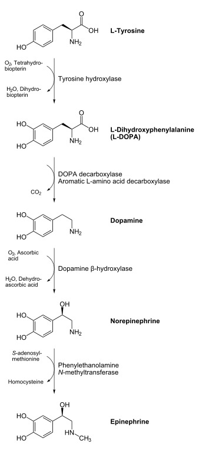

INTRODUCTION
Have you ever had an experience when you were having a really bad day and when you listened to music, it improved your mood? Have you ever wondered if there was an actual scientific explanation on why this happens? Can this help our moods or feelings? This project aims to answer these questions and find out if this can be a revolutionary discovery for future methods of therapy.
Music therapists use a person's responses and connections to music to encourage positive changes in mood and general mental mindset. Music therapy can include listening to music or creating music with instruments of all types. It may also involve singing or moving to music. It is an alternative to other types of therapy, such as counseling or cognitive behavioral therapy (CBT) (Zoppi, 2020).
SCIENCE CONCEPTS
BIOLOGY
Research on music therapy suggests that it can produce positive results on the mental wellbeing of patients. Dopamine levels rise when people listen to music, which is a neurotransmitter that makes people feel happy. Oxytocin, a major ‘feel-good’ neuropeptide, is also released. Music increases dopamine in the nucleus accumbens, the part of the brain that seeks pleasure and reward, and in the putamen, the part of the brain that regulates body movement and coordination. Adrenaline levels are increased by loud and rhythmic music, and it activates the part of the brain that processes and triggers emotions, the amygdala.
Classical music reduces heart rate and blood pressure, and relaxing music reduces the amount of noradrenaline in our system. Music also increases neurogenesis in the hippocampus, allowing the production of new neurons and improving memory. Alzheimer’s disease is a brain disorder that slowly destroys memory and thinking skills and, eventually, the ability to carry out the simplest tasks. Music may help reduce agitation and improve behavioral issues in patients with Alzheimer’s.
CHEMISTRY
As shown in Figure 1, dopamine (C8H11NO2) is made through a process of biosynthesization in the body, mainly by nervous tissue and the medulla of the adrenal glands. The enzyme dopamine -hydroxylase absorbs dopamine into vesicles and converts it to norepinephrine. The enzyme phenylethanolamine N-methyltransferase converts norepinephrine to epinephrine in the adrenal medulla and a few specific areas of the brain. Music therapy has the potential to reduce tension/reduce anxiety, enhance sleep, reduce depression, encourage a good mood, increase confidence, and boost energy. The adrenal medulla produces norepinephrine (C8H11NO3), a stress hormone that is released into the circulation and serves as a neurotransmitter in the central nervous system.
It can raise the heart rate, release glucose from energy reserves, and boost blood flow to skeletal muscle. Norepinephrine is an adrenal hormone that works by attaching - and -adrenergic receptors to increase blood pressure. Serotonin levels in the blood also rise as a result of listening to music. Oxytocin is a cyclic nonapeptide hormone that also functions as a neurotransmitter in the brain. It stimulates the G-protein coupled receptor signal transduction cascade, which results in elevated intracellular calcium concentrations, by binding to oxytocin receptors in the uterine myometrium.
The contractile protein actomyosin is induced by elevated calcium concentration levels via activating myosin light chain kinase.
PHYSICS
Sound is a form of energy that is produced by the vibration of an object, which creates pressure waves which propagate through a medium such as air or water. The study of sound waves is known as the physics of sound, and it can be used to stimulate the brain and promote relaxation, reduce anxiety, and improve mood. Sound waves consist of regions of high and low pressure known as compressions and rarefactions, respectively.
In music therapy, slow, soothing music with a low frequency and amplitude can have a calming effect, while fast-paced, upbeat music with a high frequency and amplitude can promote energy and arousal. Resonance and vibrations produced by certain instruments, such as drums or Tibetan singing bowls, can create a therapeutic effect on the body. The use of music therapy as an alternative or supplementary form of treatment for mental health conditions is rooted in the physics of sound waves and their ability to stimulate the brain and promote physical and emotional relaxation.
APPLICATION
Music therapy is a highly personalized type of therapy. There is a great deal of customization and specification involved. In its formal forms of therapy, it requires getting in touch with a licensed therapist who can choose the course of treatment that is best for a person. In contrast, informal types of therapy can involve casually enjoying music, singing along, playing instruments, and dancing. Music therapy is a generally established idea in research due to its versatility and efficacy, and some of its advantages and applications are listed below:
- It eases pain. In individuals with chronic pain disorders, music therapy has been shown to lessen pain intensity and enhance pain management (Lai et al., 2021).
- It reduces depression and anxiety. Numerous individuals, including cancer patients, people with chronic pain, and people who have mental health disorders including depression and anxiety, have found this type of therapy to be successful in lowering the symptoms (Yang et al., 2021).
- It boosts motor function. The balance and walking of people with Parkinson's disease and other mobility abnormalities have been proven to be improved by it (Brockett et al., 2021).
- It enhances cognitive abilities. According to research, music therapy helps people with dementia perform more cognitively, those with Alzheimer's disease experience fewer behavioral symptoms, and people with other neurological illnesses benefit from it as well (Zeng et al., 2020).
- It improves social abilities. It has been demonstrated that the therapy helps children that have autism spectrum disorder (ASD) and other developmental difficulties to strengthen their social skills (Brownell et al., 2020).
- In relation to the concepts above, music therapy also helps alleviate stress, lessen blood pressure, and enhance memory.
To conclude, music is an everyday concept that has a significant presence in every person's life. It is widely utilized and can be used clinically to treat patients through music therapy. Music therapy has a variety of advantages that are connected to the biology, chemistry, and physics that underlie it, making it a highly valuable scientific advancement.
OUR MEMBERS
REFERENCES
- It eases pain. In individuals with chronic pain disorders, music therapy has been shown to lessen pain intensity and enhance pain management (Lai et al., 2021).
- It reduces depression and anxiety. Numerous individuals, including cancer patients, people with chronic pain, and people who have mental health disorders including depression and anxiety, have found this type of therapy to be successful in lowering the symptoms (Yang et al., 2021).
- It boosts motor function. The balance and walking of people with Parkinson's disease and other mobility abnormalities have been proven to be improved by it (Brockett et al., 2021).
- It enhances cognitive abilities. According to research, music therapy helps people with dementia perform more cognitively, those with Alzheimer's disease experience fewer behavioral symptoms, and people with other neurological illnesses benefit from it as well (Zeng et al., 2020).
- It improves social abilities. It has been demonstrated that the therapy helps children that have autism spectrum disorder (ASD) and other developmental difficulties to strengthen their social skills (Brownell et al., 2020).
- In relation to the concepts above, music therapy also helps alleviate stress, lessen blood pressure, and enhance memory.